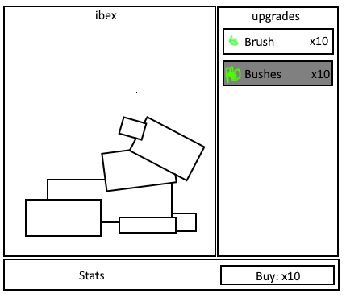
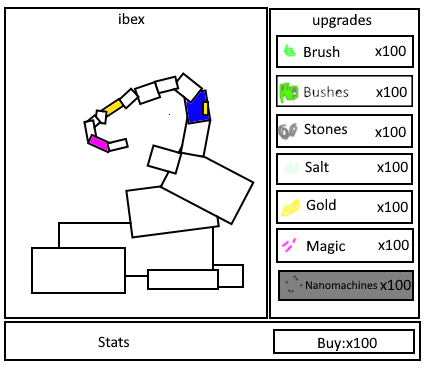

Ibex Idle
I. High Concept
An Virtual Pet Idle game where you upgrade and grow an Ibex's Horns
II. Genre
Idle, Virtual Pet
III. Platform
Desktop only
IV. Story
Theme: Humorous
Mood: Idle
Narrative: Buy upgrades like Shrubs, Bushes, Mineral Salts, and Nanomachines to make Ibex's horns grow faster. Then once they have grown, send that Ibex away and help the next one grow its horns.
Premise: Watch Ibex grow their horns
Player Motiation: Something Fun to look at while working.
V. Esthetics
Graphics style: Cartoonish
Sound: Ambient or Muted
Sounds when buying upgrades or letting Ibex go.
VI. Gameplay
Mechanics
What specific choices can the player make and what can they do?
Players can watch and wait, buy upgrades, and help another Ibex grow their horns to get points,
Control
Mouse
Teaching the game/New user experience aka "Onboarding"
Players are introduced to new features as they play, through ingame-pop-up boxes
Player learning
While the game is idle and goes on forever, all players need to do is, watch, wait, and upgrade to succeed
VII. Screenshots
Early Game
Late Game
VIII. Other
Something else you'd like to say that doesn't fit elsewhere. Also discuss any external libraries you might use. All libraries are subject to Professor approval.
IX. About the developer(s)
Jackson Levitt
Major: Game Design and Development
Minor: Economics
Graduation Year: 2023
Skill Sets: C#, HTML/CSS/Javacsript, R
Interests: Video games, Card games, Reading
Instructions
Overview: Create a living proposal for a 2D casual game you will develop.
"Living proposal" means that the document will be a starting point, but the content will evolve as you work on the game.
Important:
- Use the template in the first part of this document, or an equivalent. The page will be visible at :
http://people.rit.edu/yourid/590-ios-game/project-1-proposal.htmlor on your own server if you wish. Submission: post online, and ZIP and post (HTML & images) to dropbox before due date. Be sure to put actual URL to the online version in the mycourses dopbox comments field. - Don't overscope this! Be sure it's something you could create a reasonable implementation of in JS in 2-1/2 weeks or so. Not every feature you come up with will have to be in the final game, but the core gameplay should be.
- We've a covered chain reaction game, a simple mobile game, and a sprite shooter in this class, but don't feel constrained to these generes. Platformers, puzzle games, tile-based games, and many other genres are possible. You may have to avail yourself of online tutorials - that's fine - just be sure to cite resources - and do your own coding in the final version.
- Teams of 2 are acceptable for this project. You will need to make sure that both of your names are on the proposal, and you will both need to upload the proposal to mycourses and gibson. Team projects will be held to a higher standard on the grading.
- A simple idea that is well-executed is better than an over-scoped and under-realized concept.
- This is a new course, so I don't have a large bank of HTML5 game projects to show you, but there are some great tutorials and examples online. Google: html5 platformer tutorial, Google: html5 match 3 game tutorial, Google: html5 tile based game tutorial
- This High Concept document example by Ernest Adams might be useful.
- Get some ideas for game names here or here
- The game should be fun. Flappy Birds clones need not apply.
- After you've got a tentative design worked out, start coding!
** Discussion from Project 0 **
Definition: What's a Casual game? Most casual games have similar basic features: (1)
- Extremely simple gameplay, like a puzzle game that can be played entirely using a one-button mouse or cellphone keypad
- Allowing gameplay in short bursts, during work breaks or, in the case of portable and cell phone games, on public transportation
- The ability to quickly reach a final stage, or continuous play with no need to save the game
- Some variant on a "try before you buy" business model or an advertising-based model
Other Common Characteristics: (2)
- Average play sessions of 2 to 5 minutes
- Overall game length a few hours
- Depth of gameplay is emphasized over length - a small number elements are re-combined in unique ways. ex. Plants v. Zombies.
- Repeatability is emphasized over content. Short and exciting play sessions to encourage the player to give it "just one more try"
- Natural play breaks built into game.
- Variety and surprise are built into the game.
Examples:
- Boomshine - abstract chain reaction game
- Bubbles - avoidance game
- Hundreds -avoidance/"just one more try" abstract iOS game
- Squares 2 - abstract avoidance game
- Particle Blaster - Shooter
- Petals - puzzle game
- Pretentious Game - an abstract game with a strong narrative, and a theme of love, loss and persistence.
- Mondrianism - abstract puzzle game
- Koutack - puzzle game
- Zombie Dice - "push your luck" game
(1) http://en.wikipedia.org/wiki/Casual_game
(2) Scott Rogers - Swipe This! The Guide to Great Touchscreen Game Design